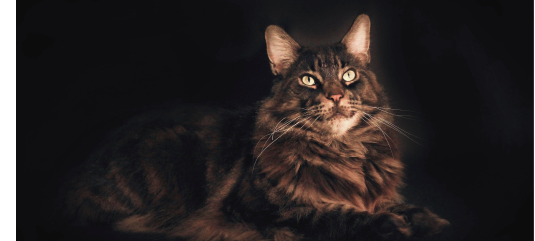
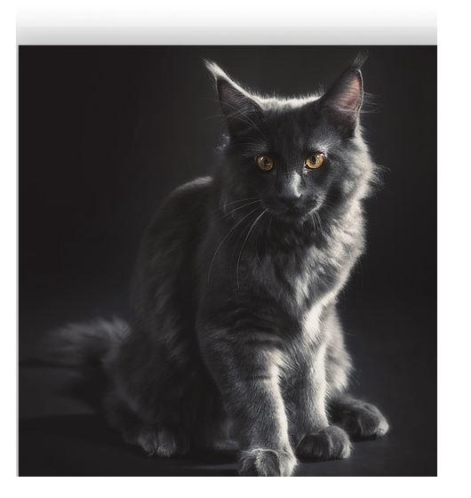
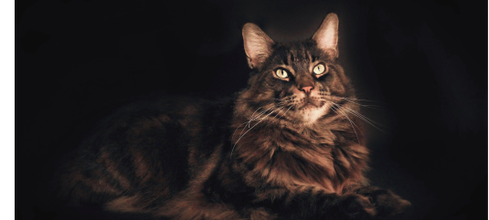
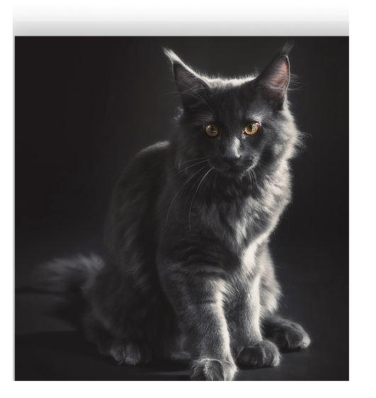

Питомник Мейн-Кунов
Первый питомник с расширеннымспектром услугУ нас коты чистокровной родословной
Смотреть котиковПитомцы
 



Особенности породы
Мейн-Кун - это порода, которая вызывает к себе уважение. Приобретая в свой дом этого питомца, вы получите умное животное, которому нет равных
- Легко уживается в семьях с детьми или другими животными
- Внешний вид этой кошки похож на дикую рысь
- Выполняет команды как дрессированная собака
- Вес может достигать 12 кг, а длинна 1 м
Почему именно мы?
Приобретая животное в нашем питомнике, вы получите
Об уходе за Мейн-Куном
Шерсть
Мы разработали 8 правил, следуя которым, шерсть вашего кота всегда будет блестящей, мягкой и послушной
Когти
Нужно ли стричь когти? Это мы и выясним, плюс ко всему расскажем как подобрать идеальную когтеточку
Уши и глаза
Владельцам котов необходимо регулярно осматривать ушки и глаза своих питомцев, ведь это может быть признаками заболевания
Питание
В нашем питомнике существует два подхода: натуральное питание и питание промышленными кормами, но выбирать только вам
Наша команда
Все сотрудники нашего питомника дипломированые специалисты в области фелинологии и ветиринарии
Серёжа Попов
Основатель питомникаНаш питомник занимается разведением Мейн-Кунов на протяжении 15 лет. Мы в ответе за каждого приобретенного вами питомца
Вопрос-Ответ
Мы ответим на самые популярные ваши вопросы
Есть важная причина, почему котенка стоит забирать домой только после трех месяцев, — это вакцинация. Первые прививки животному делают в возрасте 8 недель. Ревакцинация проводится через 3–4 недели. То есть котенок, покидающий дом позднее 12 недель, максимально защищен от различных вирусов и инфекций. Так что, чтобы в дома появился психически и физически здоровый котенок, игривый, жизнерадостный, самостоятельный и воспитанный, не спешите забирать его от кошки-мамы раньше трех месяцев.